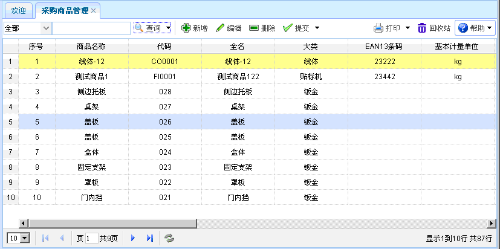
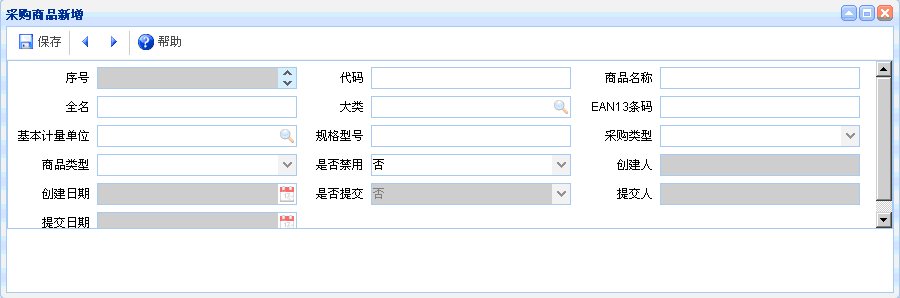
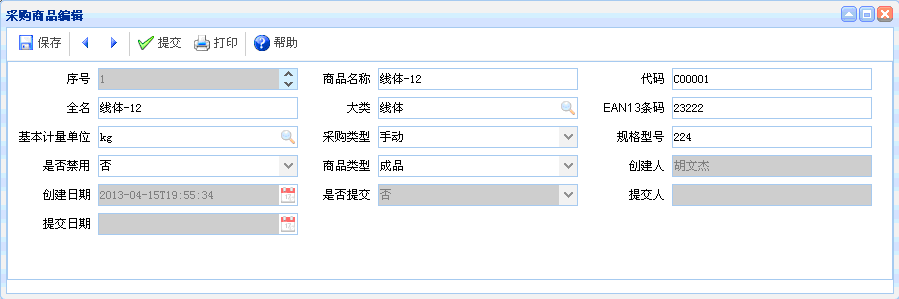

采购商品管理
采购商品管理
功能介绍：点击【采购商品管理】进入采购商品管理页面，如下图所示。功能主要包括：查询、新增、编辑、删除、提交。

图表3-1-1【采购商品管理】
图表3-1-1【采购商品管理】
【查询】：通过设置查询条件，查询出符合条件的数据，直接点击查询按钮即可列出相关信息。
【新增】：点击新增按钮，如下图所示。新增完毕，点击保存。新增时，灰色文本框为默认，有搜索图案的要进行查询。

图表3-2-2【新增】
图表3-2-2【新增】
【编辑】：选中某项采购商品信息，点击编辑按钮后，出现如下图所示内容。进行编辑、提交操作。编辑时，灰色文本框为默认，有搜索图案的要进行查询。

图表3-2-3【采购商品编辑】
图表3-2-3【采购商品编辑】
【删除】：选中某项采购商品信息后，点击删除，即可删除信息，已提交的单据不能删除。
【提交】：选中某项采购商品信息后，点击提交，可提交该信息，已提交的数据不能再次提交。
 常见问题
常见问题
1、？
2、？